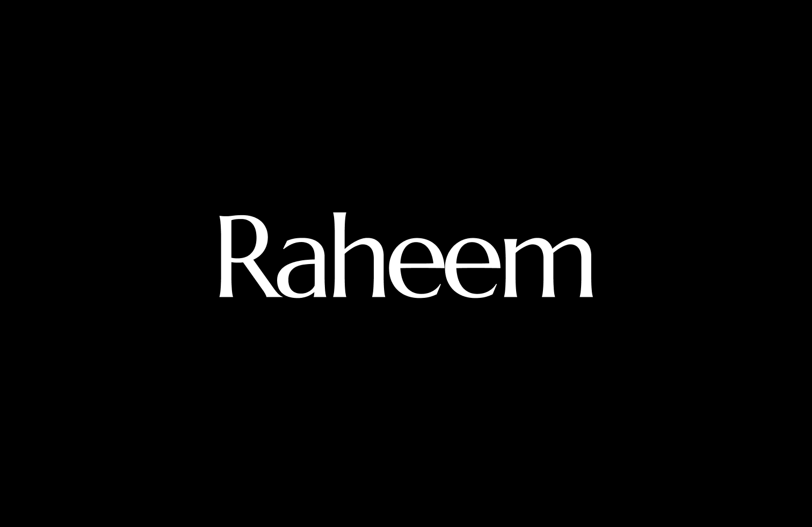
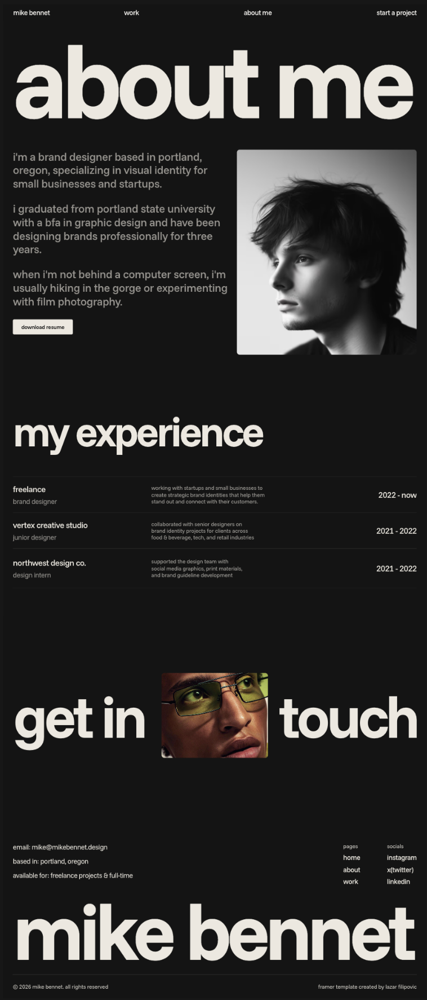
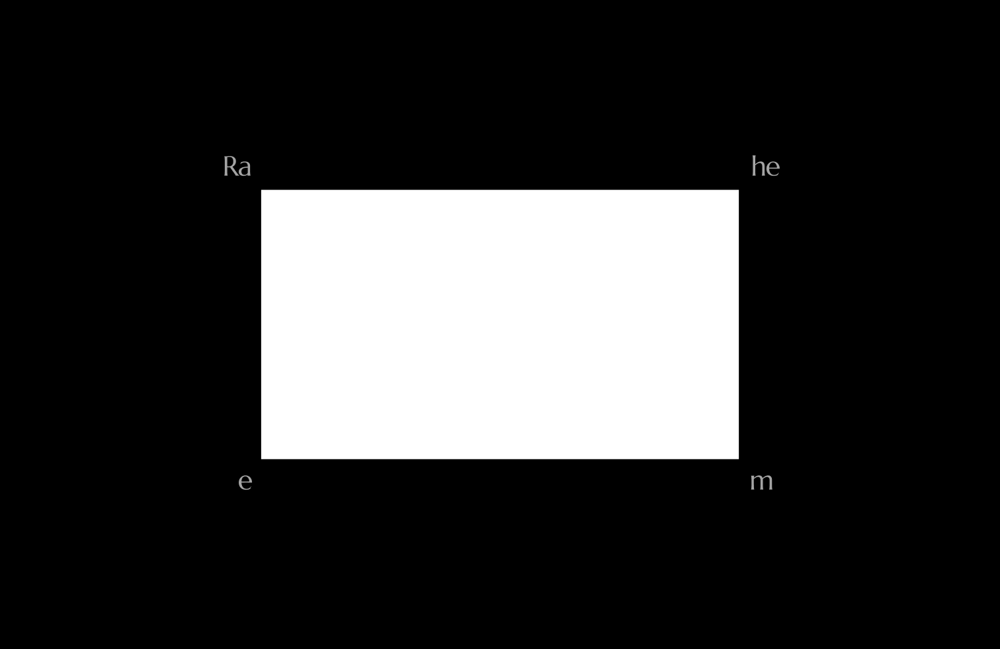
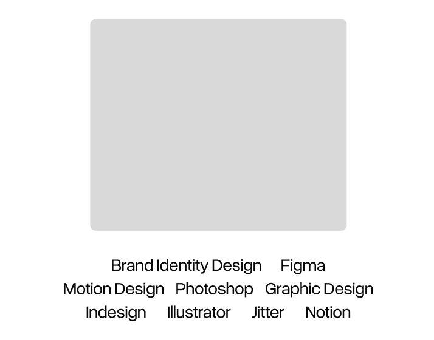

Independent practiceBrand design & creative development
Building visual identities and exploring how they extend through motion, digital spaces, and everyday touchpoints.
/ ABOUT RAHEEM
/ A LITTLE MORE ABOUT ME
I tend to look twice. At the rhythm of a street sign, the pacing of a film, the shape of a sentence, or why one tiny interaction makes an experience feel human.
I’m naturally quiet and observant, but deeply collaborative. The best work, for me, comes from honest conversation, shared curiosity, and enough trust to follow an idea somewhere unexpected.
This page is a growing archive of those influences—the things I make, notice, save, revisit, and carry into whatever comes next.
/ PERSONAL ARCHIVE
Scroll to reveal
the archive ↓











/ EXPERIENCE + EDUCATION
Building visual identities and exploring how they extend through motion, digital spaces, and everyday touchpoints.
I learn by making, researching, revisiting references, and testing what an idea can become.